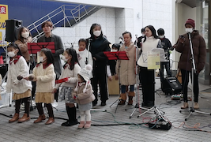

合同 (10/08/2023) 合同主日礼拝は四半期ごとに、高松コミュニティチャーチの全ての集会が一同に会して礼拝を行います。 詳細はこちら クリスマス 12月初旬、私たちは合同礼拝で救い主の誕生を祝います。その後、各集会がそれぞれイベントや礼拝を企画し、キリストの誕生を祝います。 詳細はこちら イースター (3/31/2024) イエス・キリストの復活を祝うために、各集会では独自のイースター礼拝やイベントを開催しています。 詳細はこちら  ストリート・ライブ (12/09/2023) 高松市の商店街にて、地元教会の協力のもと、クリスマスコンサートを開催します。 詳細はこちら